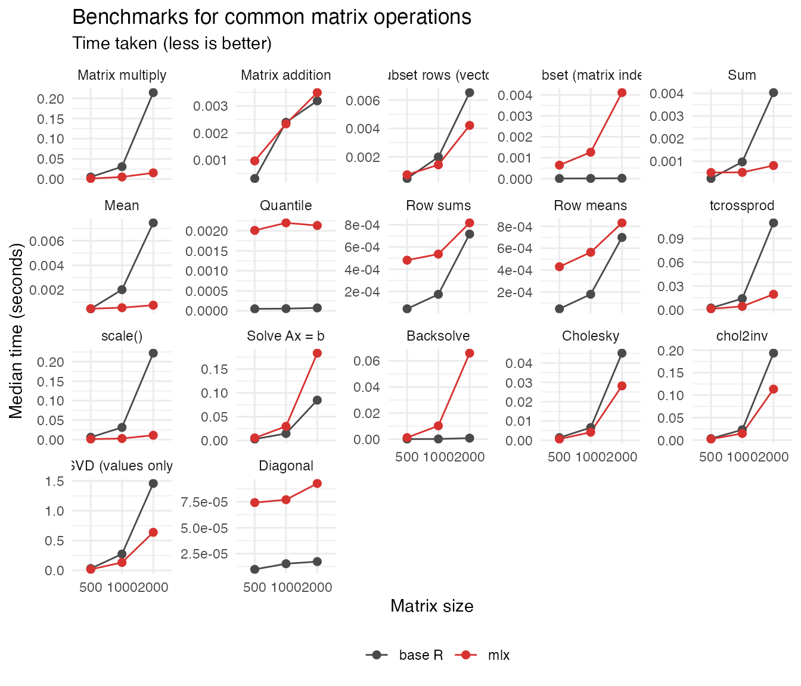

This vignette compares base R and MLX timings across core matrix routines.
library(Rmlx)
#>
#> Attaching package: 'Rmlx'
#> The following object is masked from 'package:stats':
#>
#> fft
#> The following objects are masked from 'package:base':
#>
#> asplit, backsolve, chol2inv, col, colMeans, colSums, diag, drop,
#> outer, row, rowMeans, rowSums, svd
library(bench)
library(ggplot2)
sizes <- c(small = 1000L, medium = 2000L, large = 4000L)
set.seed(20251031)
`%||%` <- function(x, y) if (!is.null(x)) x else y
force_mlx <- function(x) {
if (inherits(x, "mlx")) {
mlx_eval(x)
} else if (is.list(x)) {
lapply(x, force_mlx)
}
invisible(NULL)
}
inputs <- lapply(sizes, function(n) {
a <- matrix(rnorm(n * n), n, n)
b <- matrix(rnorm(n * n), n, n)
spd <- crossprod(a) + diag(n) * 1e-3
rhs <- matrix(rnorm(n), n, 1)
chol_base <- chol(spd)
idx_vec <- sample.int(n, size = n, replace = TRUE)
idx_mat <- cbind(
sample.int(n, size = n, replace = TRUE),
sample.int(n, size = n, replace = TRUE)
)
base_data <- list(
a = a,
b = b,
spd = spd,
rhs = rhs,
chol = chol_base,
idx_vec = idx_vec,
idx_mat = idx_mat
)
mlx_data <- list(
a = as_mlx(a, dtype = "float32"),
b = as_mlx(b, dtype = "float32"),
spd = as_mlx(spd, dtype = "float32"),
rhs = as_mlx(rhs, dtype = "float32"),
chol = as_mlx(chol_base, dtype = "float32"),
idx_vec = idx_vec,
idx_mat = idx_mat
)
force_mlx(mlx_data)
list(
base = base_data,
mlx = mlx_data
)
})
operations <- list(
list(
id = "matmul",
label = "Matrix multiply",
base = function(data) { data$a %*% data$b; invisible(NULL) },
mlx = function(data) { force_mlx(data$a %*% data$b) }
),
list(
id = "add",
label = "Matrix addition",
base = function(data) { data$a + data$b; invisible(NULL) },
mlx = function(data) { force_mlx(data$a + data$b) }
),
list(
id = "subset_vec",
label = "Subset rows (vector)",
base = function(data) { data$a[data$idx_vec, , drop = FALSE]; invisible(NULL) },
mlx = function(data) { force_mlx(data$a[data$idx_vec, , drop = FALSE]) }
),
list(
id = "subset_mat",
label = "Subset (matrix index)",
base = function(data) { data$a[data$idx_mat]; invisible(NULL) },
mlx = function(data) { force_mlx(data$a[data$idx_mat]) }
),
list(
id = "sum",
label = "Sum",
base = function(data) { sum(data$a); invisible(NULL) },
mlx = function(data) { force_mlx(sum(data$a)) }
),
list(
id = "mean",
label = "Mean",
base = function(data) { mean(data$a); invisible(NULL) },
mlx = function(data) { force_mlx(mean(data$a)) }
),
list(
id = "rowsums",
label = "Row sums",
base = function(data) { rowSums(data$a); invisible(NULL) },
mlx = function(data) { force_mlx(rowSums(data$a)) }
),
list(
id = "rowmeans",
label = "Row means",
base = function(data) { rowMeans(data$a); invisible(NULL) },
mlx = function(data) { force_mlx(rowMeans(data$a)) }
),
list(
id = "tcrossprod",
label = "tcrossprod",
base = function(data) { tcrossprod(data$a); invisible(NULL) },
mlx = function(data) { force_mlx(tcrossprod(data$a)) }
),
list(
id = "scale",
label = "scale()",
base = function(data) { scale(data$a); invisible(NULL) },
mlx = function(data) { force_mlx(scale(data$a)) }
),
list(
id = "solve",
label = "Solve Ax = b",
base = function(data) { solve(data$spd, data$rhs); invisible(NULL) },
mlx = function(data) { force_mlx(solve(data$spd, data$rhs)) }
),
list(
id = "backsolve",
label = "Backsolve",
base = function(data) { backsolve(data$chol, data$rhs); invisible(NULL) },
mlx = function(data) { force_mlx(backsolve(data$chol, data$rhs)) }
),
list(
id = "chol",
label = "Cholesky",
base = function(data) { chol(data$spd); invisible(NULL) },
mlx = function(data) { force_mlx(chol(data$spd)) }
),
list(
id = "chol2inv",
label = "chol2inv",
base = function(data) { chol2inv(data$chol); invisible(NULL) },
mlx = function(data) { force_mlx(chol2inv(data$chol)) }
),
list(
id = "svd",
label = "SVD (values only)",
min_iterations = 1L,
base = function(data) { svd(data$a, nu = 0, nv = 0); invisible(NULL) },
mlx = function(data) { force_mlx(svd(data$a, nu = 0, nv = 0)) }
),
list(
id = "diag",
label = "Diagonal",
base = function(data) { diag(data$a); invisible(NULL) },
mlx = function(data) { force_mlx(diag(data$a)) }
)
)
default_min_time <- 0.25
default_min_iterations <- 3L
run_benchmarks <- function(ops, inputs) {
rows <- vector("list", length(ops) * length(inputs))
idx <- 1L
for (op in ops) {
for (size_name in names(inputs)) {
base_data <- inputs[[size_name]]$base
mlx_data <- inputs[[size_name]]$mlx
bench_res <- bench::mark(
base = op$base(base_data),
mlx = op$mlx(mlx_data),
min_time = op$min_time %||% default_min_time,
min_iterations = op$min_iterations %||% default_min_iterations,
check = FALSE,
filter_gc = FALSE
)
rows[[idx]] <- data.frame(
operation = op$label,
size = size_name,
implementation = as.character(bench_res$expression),
iters_per_sec = as.numeric(bench_res[["itr/sec"]]),
median_seconds = as.numeric(bench_res$median, units = "seconds"),
stringsAsFactors = FALSE
)
idx <- idx + 1L
}
}
do.call(rbind, rows)
}
bench_results <- run_benchmarks(operations, inputs)
bench_results$size <- factor(
bench_results$size,
levels = names(sizes),
labels = sizes
)
bench_results$implementation <- factor(
bench_results$implementation,
levels = c("base", "mlx"),
labels = c("base R", "mlx")
)
bench_results$operation <- factor(
bench_results$operation,
levels = vapply(operations, `[[`, character(1), "label")
)
ggplot(
bench_results,
aes(x = size, y = median_seconds, colour = implementation, group = implementation)
) +
geom_line() +
geom_point(size = 2) +
scale_colour_manual(values = c("base R" = "#4A4A4A", "mlx" = "#D63230")) +
facet_wrap(~ operation, scales = "free_y") +
labs(
title = "Benchmarks for common matrix operations",
subtitle = "Time taken (less is better)",
x = "Matrix size",
y = "Median time (seconds)",
colour = ""
) +
theme_minimal(base_size = 11) +
theme(legend.position = "bottom")
bench_results
#> operation size implementation iters_per_sec median_seconds
#> 1 Matrix multiply 1000 base R 1.994009e+01 3.966389e-02
#> 2 Matrix multiply 1000 mlx 2.088546e+02 4.539930e-03
#> 3 Matrix multiply 2000 base R 3.759909e+00 2.349434e-01
#> 4 Matrix multiply 2000 mlx 4.185838e+01 2.251515e-02
#> 5 Matrix multiply 4000 base R 8.577485e-01 1.030732e+00
#> 6 Matrix multiply 4000 mlx 6.930985e+00 1.028636e-01
#> 7 Matrix addition 1000 base R 5.718959e+01 1.477035e-02
#> 8 Matrix addition 1000 mlx 2.713023e+02 2.702863e-03
#> 9 Matrix addition 2000 base R 3.493870e+01 1.058792e-02
#> 10 Matrix addition 2000 mlx 9.365916e+01 7.100216e-03
#> 11 Matrix addition 4000 base R 3.489626e+01 1.707330e-02
#> 12 Matrix addition 4000 mlx 2.619261e+01 3.446751e-02
#> 13 Subset rows (vector) 1000 base R 4.980028e+01 1.382061e-02
#> 14 Subset rows (vector) 1000 mlx 4.448729e+02 1.606626e-03
#> 15 Subset rows (vector) 2000 base R 9.228283e+00 3.482429e-02
#> 16 Subset rows (vector) 2000 mlx 1.387815e+02 5.059277e-03
#> 17 Subset rows (vector) 4000 base R 4.400019e+00 4.540410e-02
#> 18 Subset rows (vector) 4000 mlx 1.121549e+01 2.390292e-02
#> 19 Subset (matrix index) 1000 base R 3.214828e+04 1.418600e-05
#> 20 Subset (matrix index) 1000 mlx 1.119061e+03 6.056725e-04
#> 21 Subset (matrix index) 2000 base R 6.189986e+03 3.044250e-05
#> 22 Subset (matrix index) 2000 mlx 1.059929e+01 3.069760e-02
#> 23 Subset (matrix index) 4000 base R 4.576262e+03 7.626000e-05
#> 24 Subset (matrix index) 4000 mlx 6.483074e+01 1.013233e-03
#> 25 Sum 1000 base R 8.184595e+02 1.028280e-03
#> 26 Sum 1000 mlx 1.699385e+03 5.398470e-04
#> 27 Sum 2000 base R 2.289306e+02 4.129746e-03
#> 28 Sum 2000 mlx 9.956163e+02 9.001550e-04
#> 29 Sum 4000 base R 5.524733e+01 1.727701e-02
#> 30 Sum 4000 mlx 3.536713e+02 2.230195e-03
#> 31 Mean 1000 base R 4.496198e+02 2.048237e-03
#> 32 Mean 1000 mlx 7.337004e+02 8.569000e-04
#> 33 Mean 2000 base R 1.124792e+02 8.388641e-03
#> 34 Mean 2000 mlx 7.212462e+02 1.088099e-03
#> 35 Mean 4000 base R 2.577147e+01 3.573347e-02
#> 36 Mean 4000 mlx 4.231979e+02 2.200347e-03
#> 37 Row sums 1000 base R 9.235355e+02 1.973330e-04
#> 38 Row sums 1000 mlx 1.402677e+03 5.881860e-04
#> 39 Row sums 2000 base R 1.365614e+03 7.041955e-04
#> 40 Row sums 2000 mlx 1.256208e+03 7.866260e-04
#> 41 Row sums 4000 base R 3.450453e+02 2.830886e-03
#> 42 Row sums 4000 mlx 6.070471e+02 1.609845e-03
#> 43 Row means 1000 base R 5.335303e+03 1.809945e-04
#> 44 Row means 1000 mlx 1.830877e+03 5.361775e-04
#> 45 Row means 2000 base R 1.387594e+03 7.062660e-04
#> 46 Row means 2000 mlx 1.173767e+03 8.269905e-04
#> 47 Row means 4000 base R 3.600285e+02 2.740850e-03
#> 48 Row means 4000 mlx 6.068875e+02 1.629750e-03
#> 49 tcrossprod 1000 base R 4.346055e+01 1.540673e-02
#> 50 tcrossprod 1000 mlx 1.907761e+02 5.114607e-03
#> 51 tcrossprod 2000 base R 8.337613e+00 1.297033e-01
#> 52 tcrossprod 2000 mlx 4.833521e+01 1.996737e-02
#> 53 tcrossprod 4000 base R 1.554953e+00 6.282607e-01
#> 54 tcrossprod 4000 mlx 7.297389e+00 1.356707e-01
#> 55 scale() 1000 base R 6.289158e+00 5.415382e-02
#> 56 scale() 1000 mlx 5.199917e+01 1.200906e-02
#> 57 scale() 2000 base R 2.565332e+00 3.007580e-01
#> 58 scale() 2000 mlx 1.964308e+01 4.986199e-02
#> 59 scale() 4000 base R 8.941478e-01 9.078280e-01
#> 60 scale() 4000 mlx 9.877240e+00 9.136317e-02
#> 61 Solve Ax = b 1000 base R 6.797172e+01 1.345735e-02
#> 62 Solve Ax = b 1000 mlx 3.336056e+01 3.049871e-02
#> 63 Solve Ax = b 2000 base R 1.219340e+01 8.213423e-02
#> 64 Solve Ax = b 2000 mlx 5.223627e+00 1.900675e-01
#> 65 Solve Ax = b 4000 base R 2.021910e+00 4.933622e-01
#> 66 Solve Ax = b 4000 mlx 3.949557e-01 2.537963e+00
#> 67 Backsolve 1000 base R 7.034289e+03 1.389080e-04
#> 68 Backsolve 1000 mlx 8.947916e+01 1.036578e-02
#> 69 Backsolve 2000 base R 7.657459e+02 1.019629e-03
#> 70 Backsolve 2000 mlx 1.113167e+01 9.127625e-02
#> 71 Backsolve 4000 base R 2.073349e+02 4.627280e-03
#> 72 Backsolve 4000 mlx 9.117084e-01 1.093756e+00
#> 73 Cholesky 1000 base R 7.542945e+01 1.248598e-02
#> 74 Cholesky 1000 mlx 1.308314e+02 6.718793e-03
#> 75 Cholesky 2000 base R 1.168775e+01 7.517196e-02
#> 76 Cholesky 2000 mlx 3.022592e+01 2.920428e-02
#> 77 Cholesky 4000 base R 2.448286e+00 3.889900e-01
#> 78 Cholesky 4000 mlx 7.497572e+00 1.158398e-01
#> 79 chol2inv 1000 base R 4.343237e+01 2.291183e-02
#> 80 chol2inv 1000 mlx 5.728207e+01 1.634522e-02
#> 81 chol2inv 2000 base R 5.054964e+00 1.962411e-01
#> 82 chol2inv 2000 mlx 8.470390e+00 1.199426e-01
#> 83 chol2inv 4000 base R 4.070556e-01 2.488236e+00
#> 84 chol2inv 4000 mlx 7.317405e-01 1.422874e+00
#> 85 SVD (values only) 1000 base R 4.961432e+00 2.015547e-01
#> 86 SVD (values only) 1000 mlx 9.643181e+00 1.033782e-01
#> 87 SVD (values only) 2000 base R 6.672157e-01 1.498766e+00
#> 88 SVD (values only) 2000 mlx 1.469902e+00 6.803173e-01
#> 89 SVD (values only) 4000 base R 4.725168e-02 2.116327e+01
#> 90 SVD (values only) 4000 mlx 1.253724e-01 7.976236e+00
#> 91 Diagonal 1000 base R 3.494339e+04 1.353000e-05
#> 92 Diagonal 1000 mlx 8.014120e+03 8.851900e-05
#> 93 Diagonal 2000 base R 8.578421e+03 3.817100e-05
#> 94 Diagonal 2000 mlx 8.382498e+03 9.282400e-05
#> 95 Diagonal 4000 base R 1.297942e+04 6.469800e-05
#> 96 Diagonal 4000 mlx 5.684344e+03 1.505110e-04